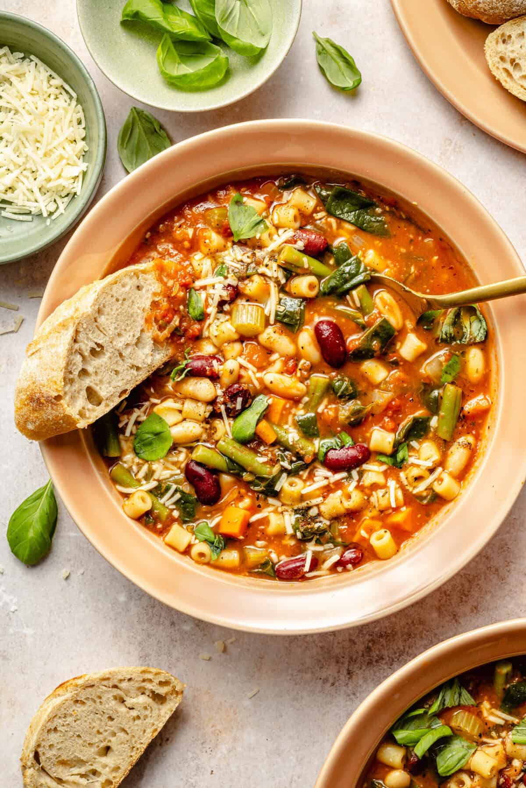

Minestrone

Description
Minestrone is a hearty Italian vegetable soup made with a flavorful broth, fresh vegetables,
beans, pasta, and aromatic herbs. It is a wholesome and nutritious meal that can be easily
customized with seasonal ingredients, making it a popular comfort food enjoyed throughout the year.
This homemade minestrone recipe is simple to prepare and packed with delicious flavors. The
combination of tender vegetables, creamy beans, and pasta creates a satisfying dish that is
perfect for lunch or dinner. Serve it with warm crusty bread and a sprinkle of Parmesan cheese
for a complete and comforting meal.
Ingredients
- Olive oil
- Onion
- Garlic
- Carrots
- Celery
- Zucchini
- Tomatoes
- Kidney beans
- Pasta
- Vegetable broth
- Spinach
- Italian herbs
- Salt and pepper
- Parmesan cheese
Steps
- Heat olive oil in a large pot and sauté the onion, garlic, carrots, and celery until they become soft and fragrant.
- Add the zucchini, tomatoes, vegetable broth, and Italian herbs, then bring the mixture to a boil.
- Reduce the heat and let the soup simmer until the vegetables are tender and the flavors are well combined.
- Add the beans and pasta, then cook until the pasta is soft and fully cooked.
- Stir in the spinach and season the soup with salt and pepper to taste.
- Serve the minestrone soup warm with grated Parmesan cheese and fresh bread.